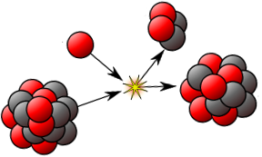
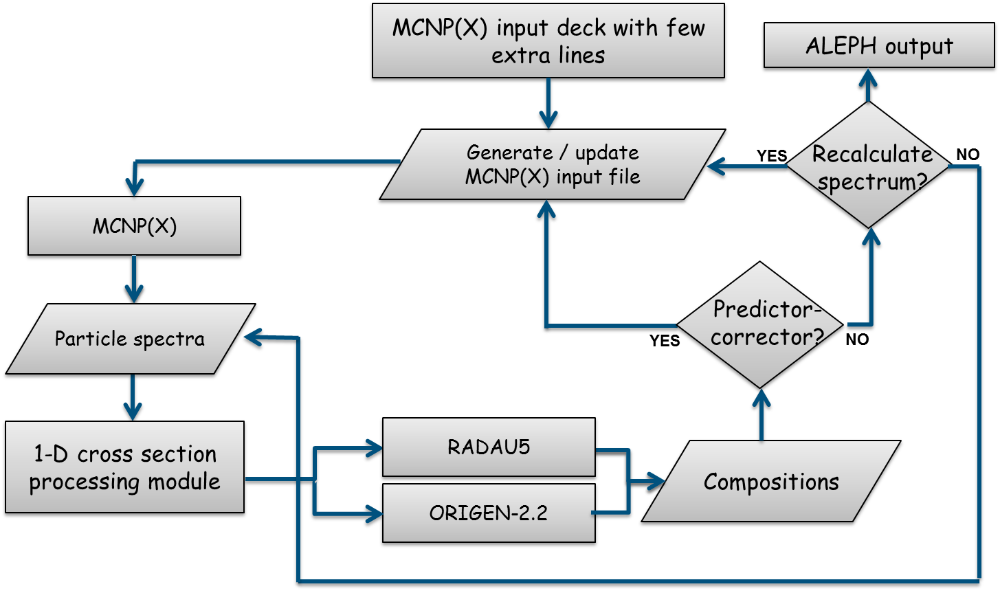

Efficient (rational) Krylov methods
and a few other things
First oral presentation
June 22, 2016
Daan Camps

Administration
CV
| Professional experience | |
|---|---|
| PhD student @ CS/KU Leuven | 2015-... |
| Digital Oilfield Consultant @ IPCOS | 2013-2015 |
| Education | |
|---|---|
| WIT @ KU Leuven | 2011-2013 |
| Astronomy @ KU Leuven | 2009-2011 |
| Physics @ UHasselt | 2006-2009 |
Doctoral Training
| Completed | |
|---|---|
| Managing my Phd | 1 ECTS |
| Hausdorff School on Low-rank Tensor Methods | 5/3 ECTS |
| Planned | |
|---|---|
| Academic English | 3/2 ECTS |
| Exploitation of Research | 2 ECTS |
Teaching Assistant
- Numerieke Wiskunde
- Numerieke Modellering en Benadering
Conferences
Accepted talk at ILAS conference (July 2016)
“Towards a computationally efficient, implicitly restarted rational Krylov method”
link
The Bateman Problem
SCK·CEN is designing MYRRHA, a new Accelerator-Driven System (ADS) reactor.

Image source: Michal Smid
Project information: myrrha.sckcen.be
The general-purpose burn-up code ALEPH2 requires an update: the numerical solver for the system of ODEs is out-of-date and underperforming.

Image source: SCK·CEN
The Bateman equations describe the particle abundances in a decay chain as a function of time:
\[\begin{aligned} \frac{\mathop{}\!\mathrm{d} \, y_{i} (t)}{\mathop{}\!\mathrm{d} t} = \sum_{j} \lambda^{\text{tr}}_{ji} \, y_{j}(t) - \lambda^{\text{tr}}_{i} \, y_{i}(t) \end{aligned} \]
or in matrix notation:
\[\begin{aligned}
y'=A \, y
\end{aligned}\]
The solution to this linear system of ODEs is given by:
\[\begin{aligned}
y(t) = e^{At} \, y_0
\end{aligned}\]
We investigated multiple methods for the computation of $e^{At}$ but this is challenging, because of the large numerical range of the entries of $A$ ( going from $10^{-40}$ to $10^{22}$)
.
We decided to leave this option for now (maybe later in my PhD when methods for the computation of $e^A \, b$ are further developed)
Reimplemented and improved the implicit Runge-Kutta method RADAU for the problem at hand:
- removed the Newton iteration
- incorporated sparse solvers for the linear systems
- Direct: Eigen/SparseLU & Umfpack
- Iterative: Eigen/BiCGSTAB
- fixed, semi-adaptive and fully-adaptive timestepping
Results & Conclusions
Significant speed-ups achieved: from 8 to >100 times faster for simulations of a 30 day period by using the combination of a sparse solver and fixed time-step
For longer timescales (up to 1000 years) a semi-adaptive approach is benificial
Outlook
To implement a product version of the modified algorithm (Summer 2016)
Plans to publish results in nuclear physics journal (End of 2016)
(Rational) Krylov methods
Definition Krylov subspaces:
Given a matrix $A \in \mathbb{C}^{N \times N}$ and a non-zero vector $b \in \mathbb{C}^{N}$, the mth Krylov subspace is given by:
\[\begin{aligned} \mathcal{K}_m (A, b) = \mathrm{span} \{ b, \: Ab, \: \cdots \:, \: A^{m-1}b \} \end{aligned}\]
Arnoldi's method
function [V,H] = Arnoldi(A,b,m)
b = b/norm(b,2); V(:,1) = b;
for i = 1:m
V(:,i+1) = A*V(:,i);
for j = 1:i
H(j,i) = V(:,j)'*V(:,i+1);
V(:,i+1) = V(:,i+1) - H(j,i)*V(:,j);
end
H(i+1,i) = norm(V(:,i+1),2);
V(:,i+1) = V(:,i+1)/norm(V(:,i+1),2);
end
end
Arnoldi's method
- Computes an orthonormal basis $V_i$ of $\mathcal{K}_m $
- Partial reduction to upper Hessenberg form
$$A \, V_i = V_{i+1} \, \underline{H}_{i+1,i}$$
$$V_i^* \, A \, V_i = H_i$$
Arnoldi Decomposition
Rotational Arnoldi Decomposition
*at an additional computational cost of $\mathcal{O}(i)$ operations per step
Sorensen's implicitly restarted Arnoldi method (IRAM)
Problem
As Arnoldi's method proceeds:
- the cost of orthogonalisation against all previous basis vectors increases
- storage requirements of a new basis vector (of full length) is necessary
- the cost of computing the Ritz values of the Hessenberg matrix increases
Solution
Implicit restart of the iteration: \[\begin{aligned} & \underline{H} - \mu \, I = \begin{bmatrix} Q & q \end{bmatrix}\begin{bmatrix} R \\ 0 \end{bmatrix} \\ & \underline{H} \leftarrow Q^{*} \, \underline{H} \, Q_{i,i-1} \\ & V \leftarrow V \, Q \end{aligned}\]
Improved solution
Advantages
Ingredients
- implicit Q-theorem [Francis, 1961]
- elementary operations with Givens rotations
Bring a (pattern of) rotations through an upper triangular matrix
Fusion of two rotations
Shift-through of a pattern of 3 rotations
Rotationally Implicitly Restarted Arnoldi Method (RIRAM)
Example
Initialisation
First similarity transformation
Fusion & right rotation through upper triangular
Shift-through
Second similarity transformation
Fusion & right rotation through upper triangular
Shift-through
Third similarity transformation
Fusion & right rotation through upper triangular
Shift-through
Fourth similarity transformation
Fusion & right rotation through upper triangular
Shift-through
Fifth similarity transformation
Fusion, right rotation through upper triangular & final fusion
Extract reduced Arnoldi decomposition
Rational Krylov Sequences
RKS method [Ruhe, 1984]
function [V,K,L] = RKS(A,B,v,m)
v = v/norm(v,2); V(:,1) = v;
for i = 1:m
[alpha,beta,gamma,delta] = choose_parameters();
t = determine_cont_vec();
w = (alpha * A + beta * B) \ (gamma * A + delta * B) * V(:,1:i-1) * t;
[w, h] = orthogonalise(w,V(1:i-1));
V(:,i+1) = V(:,i+1)/norm(V(:,i+1),2)
K(1:i+1,i) = alpha * h - gamma * t;
L(1:i+1,i) = -beta * h + delta * t;
end
end
RKS Decomposition
Rotational RKS Decomposition
Special case: Extended Krylov Decomposition
Rotational Extended Krylov Decomposition
Rotationally Implicitly Restarted Extended Krylov (RIREK)
Example of the initialisation procedure
$$\mathcal{K}_{\text{ext}} (A,b) = \text{span}(b, A\,b, A^{-1}\,b, A^2\,b, A^3\,b, A^{-2}\,b, A^{-3}\,b, A^{-4}\,b, A^4\,b)$$
Add a zero column to the pencil
Move first rotation from $\underline{K}$ to $\underline{L}$
Move second rotation from $\underline{K}$ to $\underline{L}$
Move third rotation from $\underline{K}$ to $\underline{L}$
Move fourth rotation from $\underline{K}$ to $\underline{L}$
Ready for chasing procedure
Future work
Short-term
- generalise rotational implicit restart for fully rational Krylov iterations (>2 different poles)
- exploit structure (eg. symmetry) in restart
- combine this with the approximate rational Krylov algorithms [Mach, 2014]
Mid- to long-term
- study numerical stability of implicit restart
- rational Krylov approximations to the matrix exponential
- applications: ODEs, centralizers